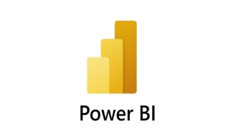

As a data analyst, I am passionate about turning data into insights to help organizations make more efficient decisions. My mission is to provide organizations with the information they need to make informed decisions that will help them reach their goals.
I have a keen eye for detail and I am highly organized. I am able to quickly identify patterns and trends in data and use this information to develop meaningful insights. I am also able to identify areas of improvement and suggest solutions to help organizations reach their goals.
Projects
Movie Correlation with python
What variables effect the gross revenue from movies.

Analyzing job market with powerbi
Analyzing the Job,Skills,and company for Data Market .
Data Cleaning with MYSQL
Transform the data to make it more usable for analysis. .
Bike Sales Dashboard
Using Excel, I have found out what the most purchasing gender is, average income, customer age brackets, and many more.
Cryptocurrency Dashboard
compare the open ,high,low,close ,volume between Bitcoin and Ethereum using Excel
Maintenance Dashboard
calculate the Mean Time Between Failure , Mean Time To Repair ,and Availability for each production line using Excel .